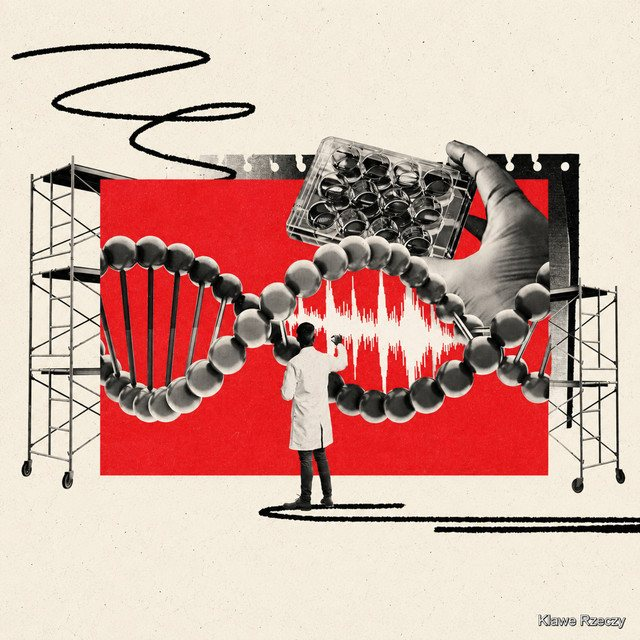

The Eclectic Polymath Podcast · Archive
#182 Editing Humanity: CRISPR, Embryos, and the Future of DNA

About this episode
For most of human history, DNA was something we inherited. Increasingly, it’s becoming something we can read, interpret—and potentially rewrite.
This episode traces the extraordinary rise of genomics, from discovering DNA’s structure to sequencing entire genomes and developing tools like CRISPR. We explore how collapsing sequencing costs are transforming medicine, why interpreting genetic variation is now harder than simply collecting the data, and what gene editing could unlock for treating disease.
Then the questions get harder. Embryo selection, genetic privacy, germline modification, enhancement, and unequal access all blur the boundary between medicine and designing future generations. Genomics may give us unprecedented control over biology—but deciding what we should change could prove far harder than learning how.
Key points
- For most of human history, DNA was something we inherited.
- Increasingly, it’s becoming something we can read, interpret—and potentially rewrite.
- This episode traces the extraordinary rise of genomics, from discovering DNA’s structure to sequencing entire genomes and developing tools like CRISPR.